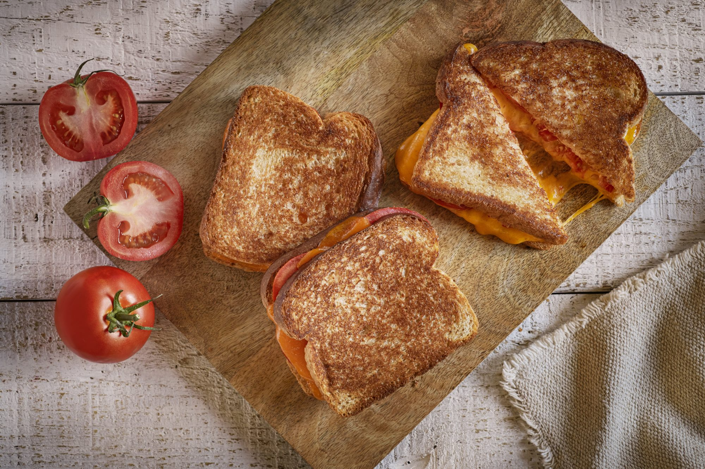

Grilled Cheese and Tomato Sandwiches

Description
Grilled Cheese and Tomato Sandwiches are so easy and delicious, perfect for that lunchtime fix.
Perfectly melted cheese surrounding a juicy tomato inside with toasted whole grain bread outside, make this sandwich
the ultimate comfort food.
Prep: 5 mins
Cook: 5 mins
Total: 10 mins
Servings: 2
Yield: 2 sandwiches
Per Serving: 377 calories; protein 21.6g; carbohydrates 25.7g; fat 21.1g; cholesterol 59.5mg; sodium 573.6mg
Ingredients
- 4 slices whole grain bread
- 1 tablespoon Country Crock Spread
- 1 medium tomato, sliced
- 4 ounces sliced Cheddar cheese
Steps
- Heat 12-inch nonstick skillet over medium heat. Spread CountryCrock Spread on one side of each bread slice
- Place 2 slices, Spread side down, in skillet. Top each with tomato, then cheese, then remaining bread slice, Spread side up.
- Cook until lightly browned on one side. Flip over and cook until cheese is melted.
Back